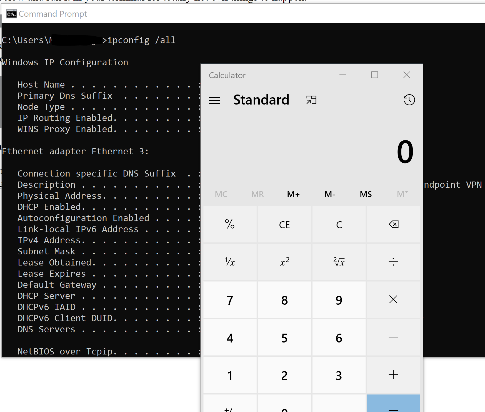

Copy the text below and run it in your terminal for totally non malicious things to happen.
ipconfig /all
Paste the above in a window CMD and observe a calculator magically appears.
You can see the actual content if you paste it in notepad first.
calc.exe
cls
ipconfig /all
This is what you will see when you scroll back to the top of your command prompt.
This is why I have trust issues copying code from unknown online sources...
This does not mean one should not copy code from places like stackoverflow.
However, things can get interesting if that website has XSS vulnerability...
TLDR; This technique is known as Paste Jacking and it is not a new technique.
This works because browsers have a feature that allow developers to automatically add content to a user's clipboard.
https://github.com/dxa4481/Pastejacking
https://developer.mozilla.org/en-US/docs/Web/API/Document/execCommand